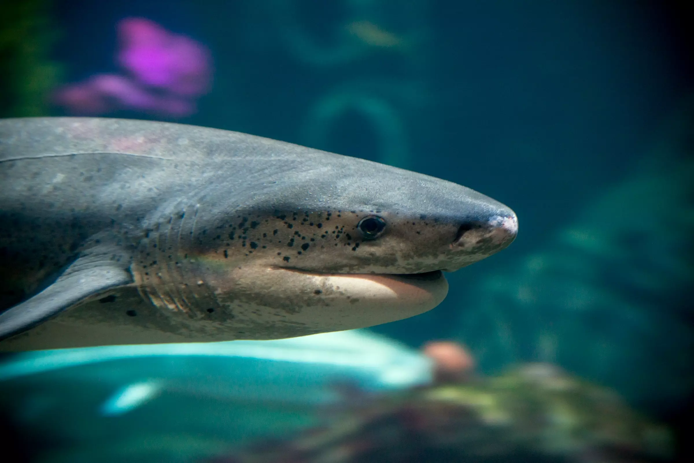
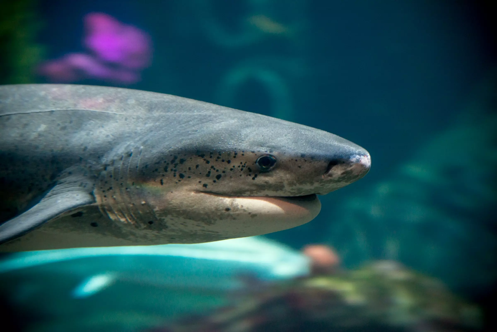

A kaleidoscope of cool
Discover the spectacular spectrum of sharks! There are over 500 species, from angel to zebra. Some are speedy, some are slow. Many feast on fish, while others prefer to slurp worms or filter plankton. Their ancestors swam the seas before dinosaurs roamed the land. Today, many populations are threatened — and face an uncertain future.All about sharks
What makes a shark a shark? Some sharks are large, others are itty bitty. Some are well-known, while many others remain less familiar. Though in popular culture sharks are large, toothy creatures to be feared, this is not always the case. In fact, many sharks around the world need protection so they can help maintain a healthy ocean for generations to come.
All sharks share these important characteristics:
Soft skeletons No bones?No bones? No problem! Instead of the hard bones that make up the human skeleton, sharks have softer skeletons made of cartilage — similar to what we have in our noses and ears.
Five to seven gill-slitsSharks have five to seven gill-slits on each side of their body. Gills are a shark’s respiratory organ – gases are exchanged with the water that flows over them. In its simplest form, oxygen is absorbed and carbon dioxide is released.
Fins for swimming, steering and balanceSharks swim using their caudal fin — which is sometimes called the tail fin. Sharks generate swimming power by moving their caudal fin from side to side. Pectoral fins, found on a shark's side behind the gills, are used for lift and steering. The dorsal fin is used for balance: it keeps the shark upright and stabilized, preventing it from rolling or spinning.
Teeth that regrowA shark's teeth fall out throughout its life and are continually replaced — this is called “revolver dentition.”
.jpg) 
